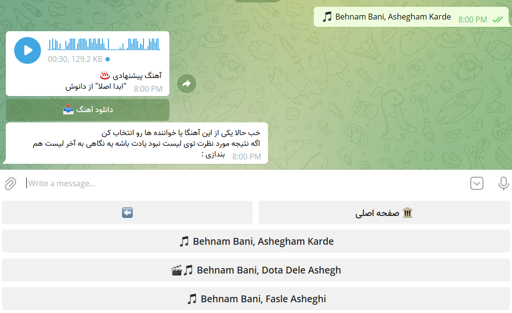
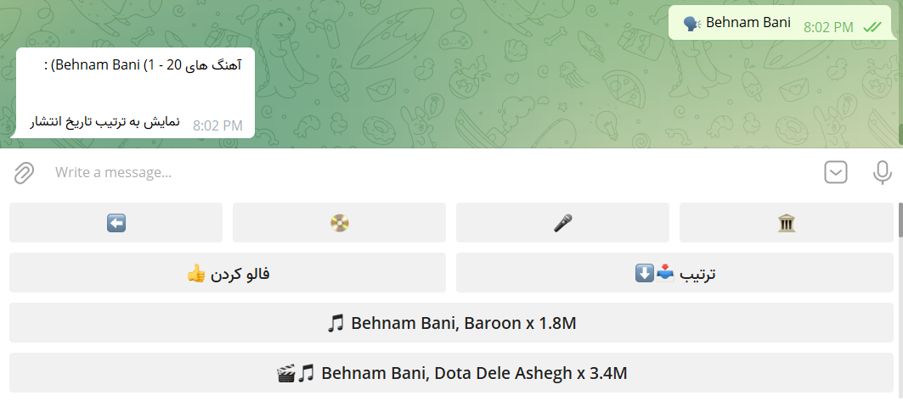
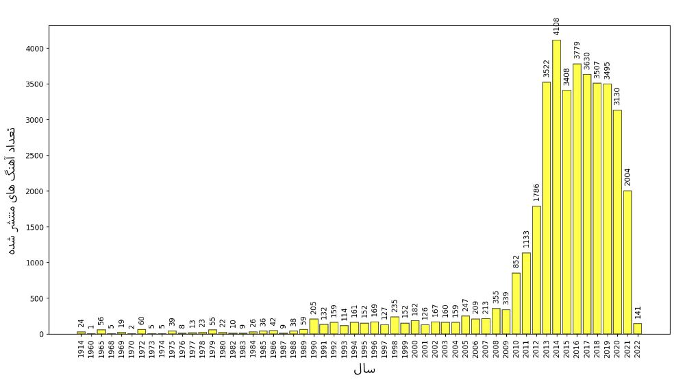
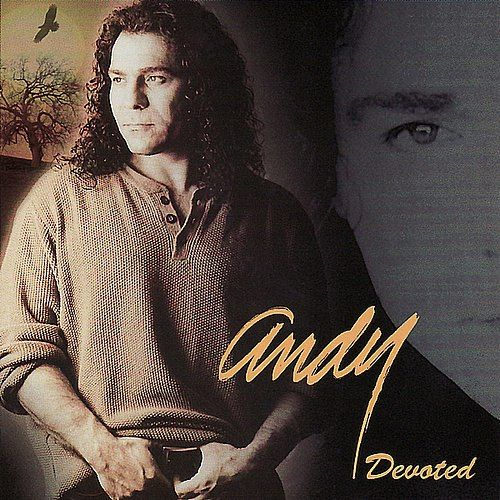
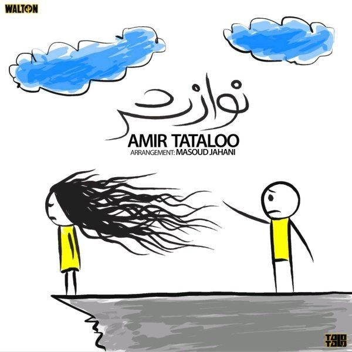
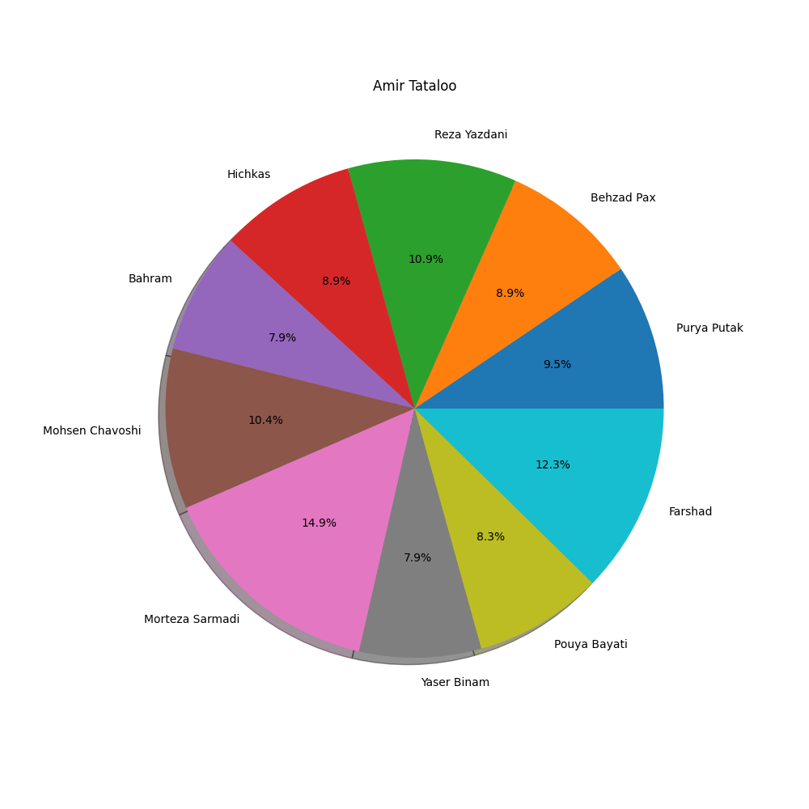
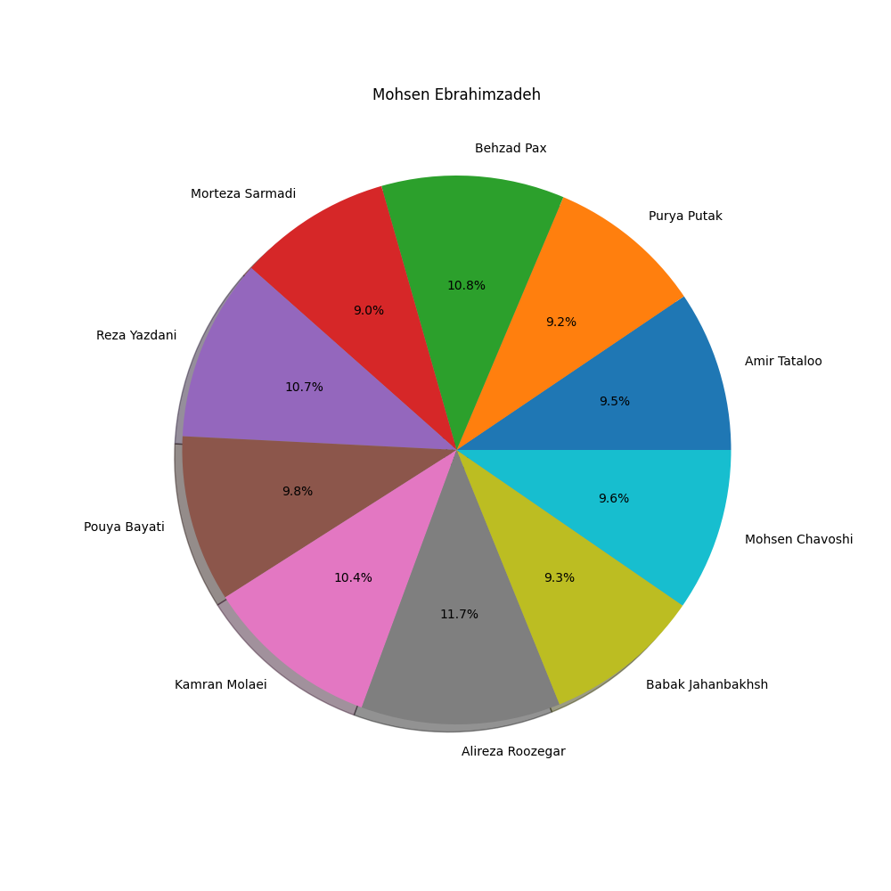
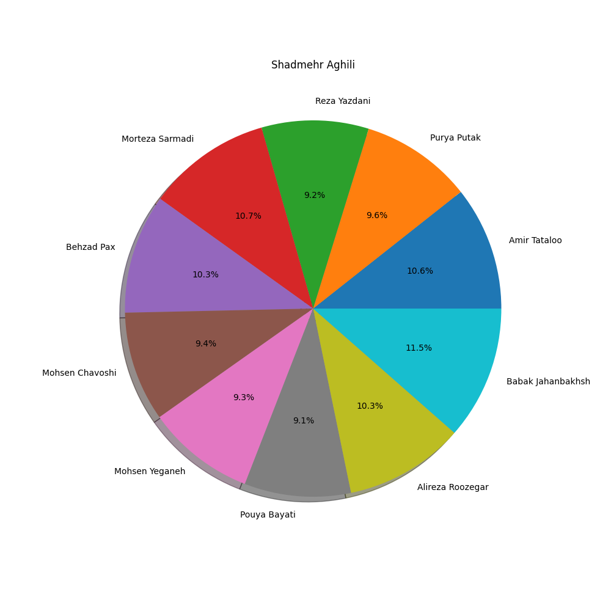

در پست قبلی تحلیلی بر روی اشعار فارسی موجود در وبسایت گنجور انجام دادم. برام جالب بود که این تحلیل رو برای متن آهنگ های فارسی هم انجام بدم. اول کمی گشتم تا ببینم چنین دیتاستی وجود داره یا نه. نتیجه این جستجو ها وبسایت های زیر بود :
تعداد آهنگ های mustext حدودا ۴ هزار تا بود که برای من راضی کننده نبود. تعداد آهنگ های lyricstranslat هم ۱۳ هزار تا بود که عدد قابل توجهی هست. بعضی از دوستان سایت رادیو جوان رو پیشنهاد دادند که تا جایی که بررسی کردم در نسخه دسکتاپش میشه به متن برخی از اشعار دسترسی داشت. میتونستم با برنامه Burp Suite ترافیک برنامه رو بررسی کنم و متن اشعار رو استخراج کنم ولی وقتی melobot هست چه کاریه حالا!ابتدا به ادمین ملوبات پیام دادم که امکانش هست دیتابیس متن آهنگ ها رو در اختیار من قرار بدن؟ که پاسخشون منفی بود. بعد پرسیدم که میتونم خودم از طریق بات جمع آوری کنم؟ که گفتند مشکلی نداره. چالشی که اینجا وجود داشت این بود که شما باید عنوان آهنگ رو برای بات بفرستید و بعد گزینه متن آهنگ رو انتخاب کنید که متن رو براتون بفرسته :

خب متن عنوان آهنگ ها رو نداشتم. اما اگر اسم خواننده رو ارسال کنید، لیست تمام آهنگ هایی که ازش وجود داره رو برمیگردونه :

حالا به یه لیست از اسامی خواننده ها نیاز دارم! با کمی جستجو به وبسایت زیر رسیدم که یه لیست تقریبا کاملی از خواننده ها (1463 تا) داره :
ابتدا این لیست رو استخراج کردم و اسامی رو برای ربات ارسال میکردم و دکمه هایی که ایموجی ? داشتند رو ذخیره کردم. بعد متوجه شدم این لیست کامل نیست و یه تعدادی از خواننده ها رو نداره. از ویکیپدیا هم کمک گرفتم :
در نهایت اسم ۴۳۸۰ خواننده رو از ربات کشیدم بیرون! در مرحله بعدی تک به تک اسم خواننده ها رو برای ربات ارسال کردم و اسم آهنگ هاشون رو استخراج کردم. در مرحله آخر هم اسم آهنگ ها رو برای ربات ارسال کردم و متن آهنگ رو کشیدم بیرون! دیتاست رو در آدرس زیر قرار دادم :
این دیتاست شامل ۴۸۴۸۸ آهنگ از ۴۳۸۰ خواننده است. البته همه این ۴۸ هزار آهنگ متن ندارند و حدودا ۲۵ هزار تا از آهنگ ها متن دارند. این دیتاست هم میتونه تکمیل تر بشه. مثلا میتونم اطلاعات lyricstranslate رو هم با این دیتاست ادغام کنم. خب حالا بریم سراغ یه سری تحلیل ساده!
ابر کلمات متن آهنگ ها
نکته جالش اینه که با ابر کلمات اشعار فارسی (گنجور) هم خیلی اشتراک داره :
اگر کلمات توقف رو حذف نکنیم، ابر کلمات متن آهنگ های فارسی به صورت زیر میشه :
چه سالی بیشترین تعداد آهنگ منتشر شده است؟نمودار زیر تعداد آهنگ های منتشر شده در سال های مختلف را نشان میدهد :

بر اساس این نمودار، بیشترین تعداد آهنگ در سال ۲۰۱۴ (۴۱۰۸ عدد) منتشر شده است.کدام آهنگ ها بیشترین تعداد دانلود را داشته اند؟۵ تا از آهنگ هایی که بیشترین تعداد دانلود رو داشتند عبارتند از :


لیست کامل رو در لینک زیر قرار دادم
آهنگ های کدام خواننده بیشترین تعداد دانلود را داشته است؟
امیر تتلو – ۶۱۶ میلیون و ۵۹۸ هزار دانلود
شادمهر عقیلی – ۲۸۱ میلیون و ۷۹۸ هزار و ۴۰۰
محسن ابراهیم زاده – ۲۷۰ میلیون و ۵۵ هزار و ۱۰۰
لیست کامل رو در لینک زیر قرار دادم
متن آهنگ هر یک از خواننده ها با سایر خواننده ها چقدر اشتراک دارد؟
برای پاسخ به این سوال اومدم دایره لغات هر خواننده رو استخراج کردم. بعد اشتراک دایره لغات رو با سایر خواننده ها به دست آوردم و برای هر خواننده، نمودار دایرهای ۱۰ نفری که بیشترین اشتراک رو باهاشون داشتند رو رسم کردم. برای نمونه، این نمودار رو برای امیر تتلو، محسن ابراهیم زاده و شادمهر عقیلی رسم کردم :



لیست کامل تصاویر رو در لینک زیر قرار دادم :
کدام یک از نام های ایرانی در متن آهنگ ها پرتکرار بوده اند؟
لیست کامل رو در لینک زیر قرار دادم :
الان میخوام بررسی کنم در اشعار کدامیک از خواننده ها بیشترین الفاظ رکیک به کار رفته. برای این منظور از مجموعه داده Persian-Swear-Words که مجموعهای از الفاظ رکیک فارسی است استفاده میکنم. لیست زیر تعداد تکرار هر یک از این الفاظ رکیک رو در متن آهنگ های فارسی نشون میده ? :
البته بعضی از الفاظ این لیست به خودی خود واقعا فحش نیستند. اگر در زمان و مکان خاصی استفاده بشن فحش محسوب میشن. در لیست زیر من تعداد فحش هایی که هر خواننده در اشعارش استفاده کرده رو قرار دادم. مقابل اسم هر خواننده هم فحش هایی که در اشعارش وجود داشته رو قرار دادم :
همین کار رو برای نام های ایرانی هم انجام دادم. در لیست زیر میتونید ببینید هر خواننده کدامیک از نام های ایرانی رو در اشعارش مورد استفاده قرار داده :
خیلی کار های دیگه هم میشه انجام داد. مثلا هیت مپ تعداد آهنگ هایی که در ماه های مختلف و روز های مختلف سال منتشر شده رو تولید کرد و …اگر نمودار دیگهای براتون جالبه در کامنت ها بگید تا در اولین فرصت اضافه کنم.
nb.neighbours()
| title | date | |
|---|---|---|
| prev | گشت و گذار در میان ارقام عدد π | ۱۴۰۰/۱۱ |
| next | رادیوگیک زیر ذرهبین! | ۱۴۰۱/۰۱ |